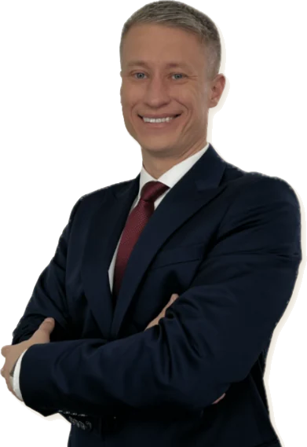
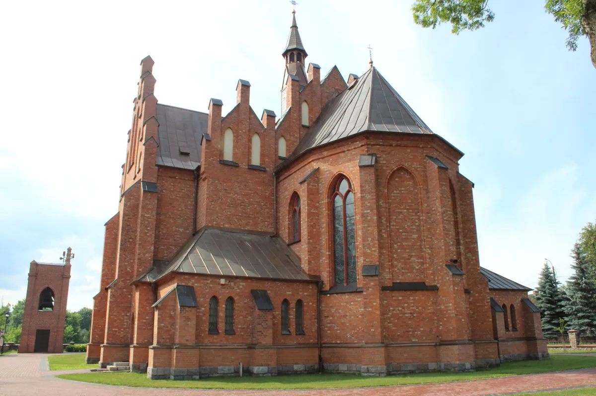
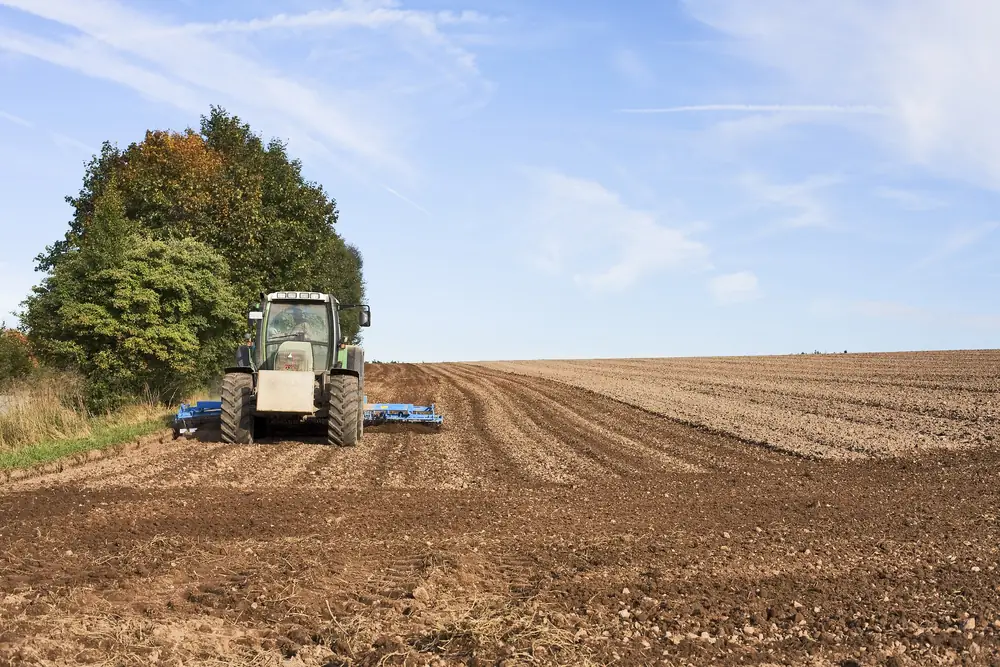
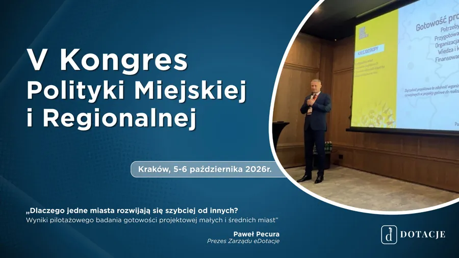
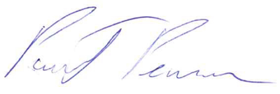
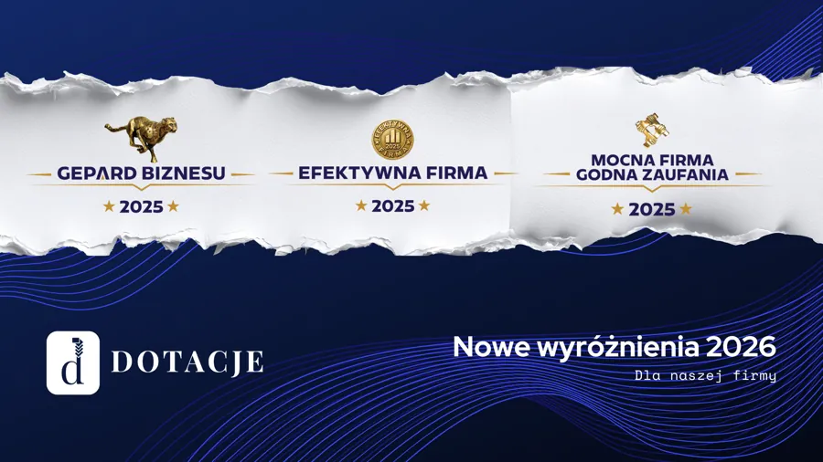
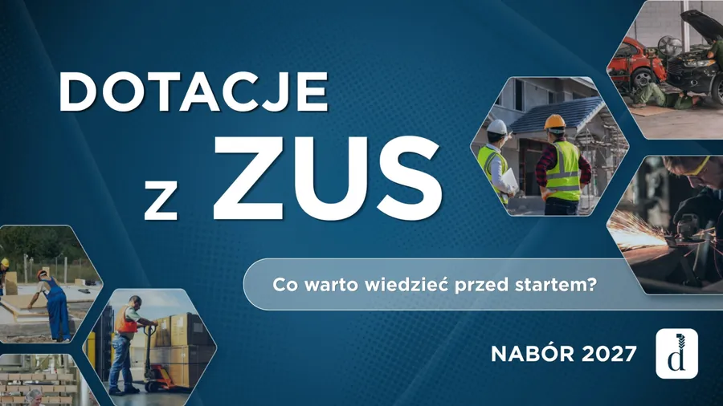
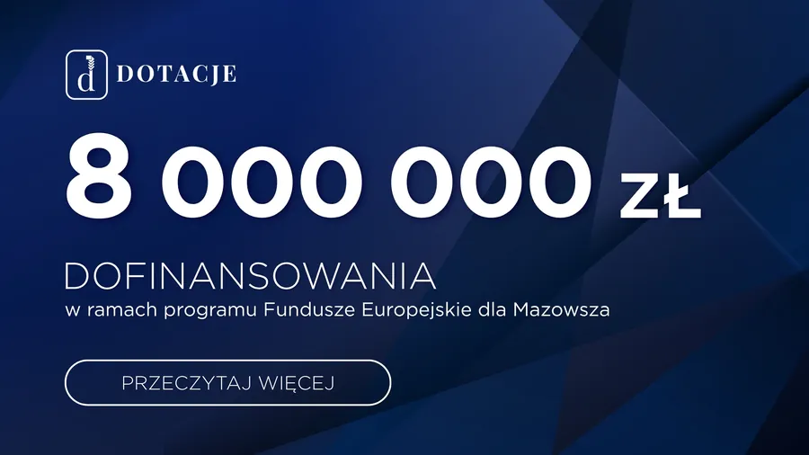

Przedsiębiorcy
Dofinansowanie na rozwój działalności, zakup maszyn i urządzeń, nowe produkty i usługi oraz wejście na rynki zagraniczne.

Prowadzimy cały proces: od wyboru programu i przygotowania wniosku po realizację i rozliczenie projektu. 12 lat doświadczenia i 108 mln zł pozyskanych dotacji.
ul. Mieczkowskiego 25/14, Ostrów Mazowiecka, pon.-pt. 8:00-16:00
Wybierz swoją grupę i sprawdź, z jakich programów możesz sfinansować planowaną inwestycję.
Dofinansowanie na rozwój działalności, zakup maszyn i urządzeń, nowe produkty i usługi oraz wejście na rynki zagraniczne.

Dotacje na infrastrukturę publiczną, rewitalizację, ochronę zabytków, termomodernizację i przestrzenie wspólne.

Dofinansowanie na rozwój, modernizację i restrukturyzację gospodarstwa, dopasowane do planowanych inwestycji.
Na zakup maszyn i urządzeń, które poprawiają bezpieczeństwo i warunki pracy w Twojej firmie. Nowy nabór już wkrótce, warto przygotować się wcześniej.
Przy naborach ogłoszonych na naszej stronie analiza jest bezpłatna.
Prowadzimy projekt od pomysłu do końca okresu trwałości, żeby mogli Państwo zająć się swoją działalnością.
Godzinna konsultacja z analizą możliwości kosztuje 200 zł netto. Jeśli dojdzie do współpracy, jej koszt wliczamy w cenę wniosku.

zapraszam do zapoznania się z naszymi realizacjami oraz obszarami, w których możemy Państwa wesprzeć. Mam nadzieję, że znajdą tu Państwo informacje pomocne w planowaniu własnych przedsięwzięć.
Każdy projekt jest inny, dlatego zachęcam do kontaktu i rozmowy o Państwa planach.

Paweł Pecura, Prezes Zarządu
Wyróżnienia 2025: Gepard Biznesu, Efektywna Firma, Mocna Firma Godna Zaufania.
Dzięki bardzo dobrej współpracy i pomocy administracyjnej eDotacje nasza parafia w ostatnich latach mogła przeprowadzić wiele remontów przy zabytkowym kościele. Planujemy dalszą współpracę przy remoncie kościoła oraz muzeum lat dziecięcych Stefana Kard. Wyszyńskiego.
Firma eDotacje z Ostrowi Mazowieckiej samodzielnie opracuje i sprawnie przygotuje wnioski o dotacje ze skutkiem pozytywnym. Wybór i pozytywna ocena Dotacje sp. z o.o. jest najlepszym dowodem stałej współpracy i uzyskiwanych środków z funduszy unijnych, ZUS i ARiMR.
Firma eDotacje towarzyszy nam od początku istnienia naszej organizacji. Dzięki spółce nie straszne są nam wnioski o granty, rozliczenia, a nawet sprawozdania. Świat dotacji staje się przystępny i jasny jak słońce.



Napisz kilka słów o planach, a oddzwonimy i powiemy, z jakiego programu można je sfinansować.